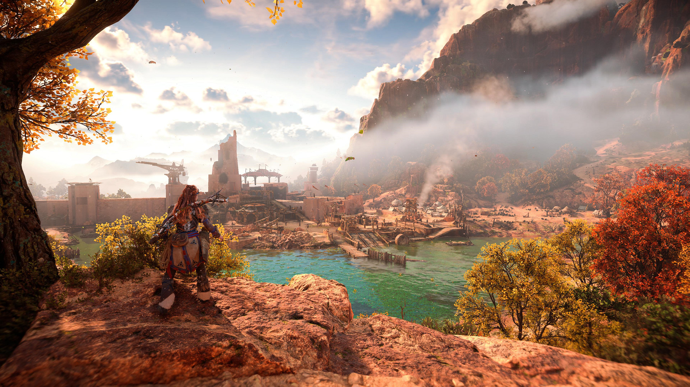

As Technology advances visual advancements in the gaming space and digital environment have reached new heights.
At the heart of these visual advancements are two key innovations: hyper-realistic graphics and ray tracing.
These technologies are transforming the way we perceive and interact with the digital world especially in gamming.
Cyberpunk 2077
What are Hyper-realistic Graphics?
Hyper-realistic graphics aim to replicate real-world visuals with incredibly detailed textures, lighting, shadows,
and animations that mimic physical reality. This involves leveraging high resolution assets, real time rendering engines,
and AI driven enhancements. The goal is for developers to have the ability to make games almost indistinguishable from the real world.

Horizon Forbidden West
The role of Ray Tracing
Ray tracing simulates how light interacts with objects in a 3D environment, it creates realistic images by tracing the path
of the light from the viewers perspective creating accurate reflections, refractions and shadows. This results in a more natural lighting
and cinematic gaming experience. Ray tracing is now entering real time apllications through GPUs from AMD, and NVIDIA, aswell as consoles
like the Playstation 5 and Xbox series X.